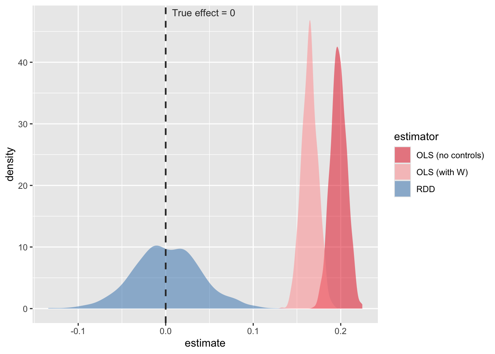

Does access to alcohol affect psychological well-being? We’ll be using the Regression Discontinuity Design (RDD) to answer the question. This methodology interestingly has roots in psychology, but gained popularity in other social sciences. The design requires a natural threshold (e.g., the legal drinking age of 21). Yörük & Yörük (2012) used the RDD for this very question, and we’ll run a simulation to compare the effects for an OLS vs. the RDD. It will be very similar to portfolios #6 and #7 (the social media DiD simulation).
library(ggplot2)
library(tidyverse)
# Color
COL_BIAS <- "#E41A1C" # red — biased OLS
COL_RDD <- "#377EB8" # blue — RDD estimate
COL_TRUE <- "#333333" # dark gray — our defined true effect
# --- DGP Parameters ---
N <- 5000 # individuals
delta <- 0.00 # TRUE causal effect of alcohol on MH (null effect, from Yörük & Yörük 2012)
gamma_u <- 0.40 # unobserved confounder strength (e.g., neuroticism, pre-existing MH)
gamma_w <- 0.20 # observed confounder strength (e.g., sex, parental education)
cutoff <- 21 # drinking age threshold
bw <- 2 # RDD bandwidth (years on either side of cutoff)The ‘running variable’ is age (in years, centered on 21). The treatment is legal alcohol access a sharp indicator that turns on at age 21. The key RDD assumption is that all individual characteristics (observed and unobserved) progress smoothly through the cutoff, and the variable of interest (legal access) is the only thing that jumps discontinuously.
set.seed(123)
df <- tibble(
# Running variable (age in years from 19 to 23)
age = runif(N, 19, 23),
# Center age on the cutoff
age_c = age - cutoff,
# Treatment (sharp RDD)
D = as.integer(age >= cutoff),
# Unobserved confounder (e.g., neuroticism, pre-existing mental health vulnerability)
U = rnorm(N),
# Observed confounder (demographics like sex, parental education, etc.)
W = rnorm(N),
# First stage: alcohol use jumps at 21
# Here we express it as drinking days per month (Yörük & Yörük 2012 find +1.5 days)
alcohol = 0.20 * W + gamma_u * U + 1.5 * D + rnorm(N, sd = 0.5),
# Mental health outcome (higher = worse, e.g. a depression scale)
# TRUE effect of alcohol = 0 (delta). Confounders U and W affect MH directly.
MH = delta * alcohol + gamma_u * U + gamma_w * W + rnorm(N, sd = 0.5)
)
head(df)## # A tibble: 6 × 7
## age age_c D U W alcohol MH
## <dbl> <dbl> <int> <dbl> <dbl> <dbl> <dbl>
## 1 20.2 -0.850 0 -0.679 0.350 -0.196 -0.597
## 2 22.2 1.15 1 0.574 0.814 2.67 0.226
## 3 20.6 -0.364 0 -0.705 -0.517 -0.179 -0.108
## 4 22.5 1.53 1 -0.534 -2.69 0.154 -0.201
## 5 22.8 1.76 1 0.774 -1.10 1.95 -0.227
## 6 19.2 -1.82 0 -0.476 -1.26 -0.149 -0.485In observational data, researchers typically regress mental health on alcohol use, adding whatever covariates they have. The problem is, U (neuroticism, pre-existing vulnerability) is unobserved, so it sits in the error term. Since U predicts both drinking AND mental health, OLS is biased upward.
# Match RDD sample 19-23
df_bw <- df %>%
filter(age >= 19 & age <= 23)
# Model 1: Naive OLS (no controls)
ols_naive <- lm(MH ~ alcohol, data = df_bw)
# Model 2: Adjusted OLS (controlling for observed W, but U is unobserved so bias remains)
ols_adj <- lm(MH ~ alcohol + W, data = df_bw)
coef(ols_naive)["alcohol"]## alcohol
## 0.19coef(ols_adj)["alcohol"]## alcohol
## 0.15delta## [1] 0Both OLS estimates are inflated above zero because U (the unobserved confounder) creates a spurious correlation between drinking and poor mental health. A researcher without the RDD would might conclude that alcohol predicts worse psychological well-being (and people will interpret that causally!).
The legal drinking age creates a sharp discontinuity in legal alcohol access at age 21. Since people cannot manipulate their exact birthday, individuals just under and just over 21 are assumed to be identical on all characteristics, including the unobserved U. Any jump in mental health outcomes at the threshold can therefore be causally attributed to legal alcohol access.
We implement a simple parametric RDD: regress MH on the treatment indicator (D) and a linear function of centered age, allowing the slope to differ on each side of the cutoff.
# RDD within bandwidth
rdd_model <- lm(MH ~ D + age_c + D:age_c, data = df_bw)
coef(rdd_model)["D"]## D
## -0.052delta## [1] 0The RDD estimate is close(er) to zero, correctly recovering the null effect (consistent with Yörük & Yörük, 2012).
Just as in the social media portfolio, we now run 1,000 simulated datasets to compare the sampling distributions of OLS and RDD. The true effect is zero, so a good estimator should be centered on zero. A biased estimator will not be.
set.seed(471)
n_sims <- 1000
results <- tibble(
sim = 1:n_sims,
ols_naive = NA_real_,
ols_adj = NA_real_,
rdd = NA_real_
)
for (i in 1:n_sims) {
# Generate sample
d <- tibble(
age_c = runif(N, -2, 2),
D = as.integer(age_c >= 0),
U = rnorm(N),
W = rnorm(N),
alcohol = 0.20 * W + gamma_u * U + 1.5 * D + rnorm(N, sd = 0.5),
MH = delta * alcohol + gamma_u * U + gamma_w * W + rnorm(N, sd = 0.5)
)
results$ols_naive[i] <- coef(lm(MH ~ alcohol, data = d))["alcohol"]
results$ols_adj[i] <- coef(lm(MH ~ alcohol + W, data = d))["alcohol"]
results$rdd[i] <- coef(lm(MH ~ D + age_c + D:age_c, data = d))["D"]
}
mean(results$ols_naive)## [1] 0.2mean(results$ols_adj)## [1] 0.16mean(results$rdd)## [1] 0.0015delta## [1] 0The RDD results are now even closer to 0, and the other OLS regressions remain biased.
Now, let’s plot a similar plot.
results_long <- results %>%
pivot_longer(cols = c(ols_naive, ols_adj, rdd),
names_to = "estimator", values_to = "estimate") %>%
mutate(estimator = factor(estimator,
levels = c("ols_naive", "ols_adj", "rdd"),
labels = c("OLS (no controls)", "OLS (with W)", "RDD")))
fig_mc <- ggplot(results_long, aes(x = estimate, fill = estimator)) +
geom_density(alpha = 0.5, color = NA) +
geom_vline(xintercept = 0, linetype = "dashed", color = COL_TRUE, linewidth = 0.8) +
annotate("text", x = 0, y = Inf, label = "True effect = 0",
vjust = 1.5, hjust = -0.1, size = 3.5, color = COL_TRUE) +
scale_fill_manual(values = c("OLS (no controls)" = COL_BIAS,
"OLS (with W)" = "#FF9999",
"RDD" = COL_RDD))
fig_mc
OLS is systematically shifted right (i.e., it finds a positive effect of alcohol on mental health that does not exist). The RDD distribution is centered on zero, correctly recovering the null.